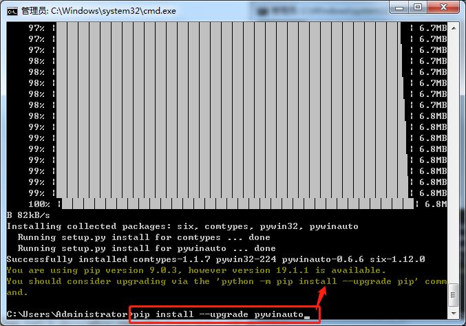
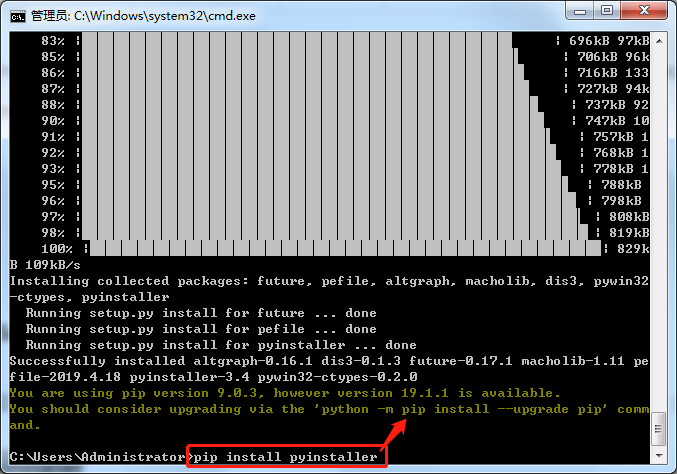
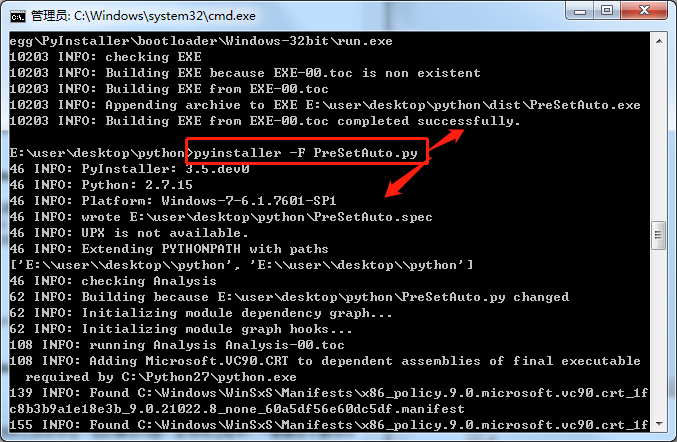

使用Python之PyWinAuto进行自动化测试
- 下载安装Windows GUI窗口的自动化测试库pywinauto:直接使用pip安装:进入cmd窗口 —>
pip install --upgrade pywinauto

或者也可以手动安装(离线项目主机)
安装 pyWin32 extensions
下载 six并执行 python setup.py install来安装
下载 comtypes 并执行 python setup.py install来安装
下载 the latest pywinauto 并执行 python setup.py install来安装
注：six，comtypes，pywinauto可以使用 pip download pywinauto 得到相应的包
离线情况下安装依赖pywin32 安装pywin32 要注意python版本，位数（要和系统统一），setutools版本等问题。官方下载地址
支持的控件：
标准Win32控件：MFC, WTL, VB6和其他一些使用WinForms的老应用 所有基于MS UI Automation的标准部件：WPF, Qt, 所有浏览器, Windows文件资源管理器和其他；
对于非标准控件，简单情况下，我们可以在得到窗口句柄后，模拟键盘命令对其进行操作。
- 撰写PreSetAuto.py代码
#导入时间库 import time #导入pywinauto库 from pywinauto import application #启动记事本 app = application.Application().start('notepad.exe') #打开菜单方法1 #app.Notepad.MenuSelect('帮助->关于记事本') #打开菜单方法2 #app['记事本'].menu_select(u'帮助(H)->关于记事本(A)') #打开菜单方法3 app.Notepad.TypeKeys('%HA',pause=1) #定位“关于记事本”的对话框方法1+点击 #app.window(title_re='关于“记事本”').window(title_re='确定').Click() #定位“关于记事本”的对话框方法2+点击 #app['关于“记事本”']['确定'].Click() #定位“关于记事本”的对话框方法3 about_dlg = app.window(title_re="关于", class_name="#32770") about_dlg['确定'].Click()# +点击 #模拟键盘输入 app.Notepad.TypeKeys(u"测试") time.sleep(2) #关闭有问题方法1？不成功 #app.Notepad.close() #方法2成功运行 #app.Notepad.TypeKeys('%FX') #方法3成功运行 app.Notepad.MenuSelect("文件->退出") time.sleep(2) #退出时弹出对话框操作，同窗体定位，成功 #app['记事本']['不保存'].Click() #退出时弹出对话框操作，同窗体定位，成功2 app.window(title_re='记事本').window(title_re='不保存').Click() - 安装打包可执行文件工具pyinstaller：pip install pyinstaller

也可以下载源码包，然后进入包目录，执行下面的命令（需要安装setuptools）：
python setup.py install
安装完后，检查安装成功与否：
pyinstaller --version
- 打包单文件可执行文件:pyinstaller -F —w PreSetAuto.py
在CMD环境中要先进入PreSetAuto.pys所在目录(如：E:\user\desktop\python)：
cd E:\user\desktop\python E:参数说明： -F：打包一个单个文件；—w：不显示Windows命令行界面

注：Pyinstaller对中文目录存在一定的兼容问题。故使用过程中，一般最好不要将exe文件放在带有中文的目录下，比如桌面。
main return -1这种错误基本都是自己的问题, 只能在输出exe时参数加个’-d’即debug模式, 然后再查下打印的错误信息
调试记录FAQ:
Q:[6188] Failed to execute script notepad Traceback (most recent call last): File "notepad.py", line 3, in <module> File "site-packages\pywinauto\application.py", line 1052, in start File "site-packages\pywinauto\application.py", line 1039, in app_idle pywintypes.error: (1813, 'WaitForInputIdle', '\xd5\xd2\xb2\xbb\xb5\xbd\xd3\xb3\x cf\xf1\xce\xc4\xbc\xfe\xd6\xd0\xd6\xb8\xb6\xa8\xb5\xc4\xd7\xca\xd4\xb4\xc0\xe0\x d0\xcd\xa1\xa3')
A:把notepad.py改名为PreSetAuto.py即可。原因：打包生成的notepad.exe与系统程序同名冲突。。。